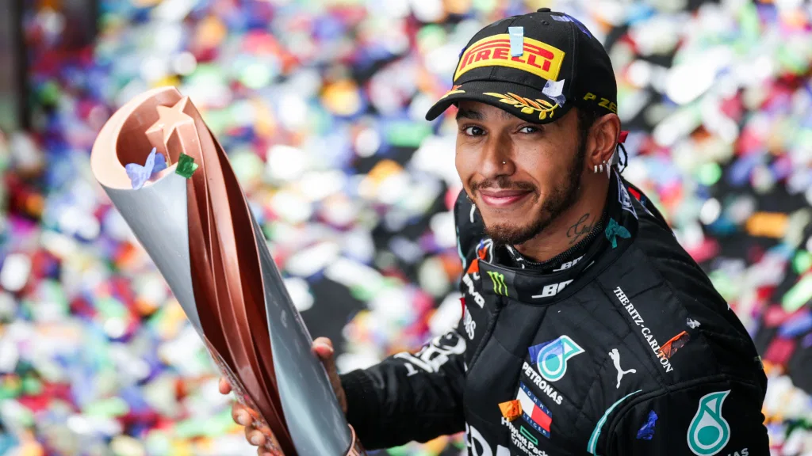

SIR LEWIS HAMILTON
The most successful driver in Formula One history

Lewis Hamilton wins his 7th F1 World Driver's Championship in Turkey 2020
Here is a timeline of Lewis Hamilton's life:
- 1985: Born in Stevenage, Hertfordshire, England, to a black father, Anthony Hamilton, and a white mother, Carmen Larbalestier, on January 7th.
- 1993: Began Karting at the age of 6.
- 1995: Became the youngest driver to win the British cadet karting championship at the age of 10. Met Ron Dennis, team boss of the McLaren Formula One team, and asked for an autograph that would eventually lead to him getting a drive at McLaren in a few years' time.
- 1998: After his second Super One series and British championship wins, Lewis was called by Ron Dennis to be offered a role in the McLaren driver development programme. The contract included an option of a future Formula One seat, which would make Hamilton the youngest driver to secure a contract which later resulted in a Formula One drive.
- 1999-2001: Competed in Intercontinental A (1999), Formula A (2000) and Formula Super A (2001). Became European champion in 2000 with maximum points.
- 2001: Began his car racing career in the British Formula Renault Winter series where he finished 5th in the standings.
- 2002: Competed in the Formula Renault UK campaign with Manor Motorsport and finished 3rd overall.
- 2003: Remained with Manor for another year and won the Formula Renault UK championship. Missed the last two races of the season to make his debut in the season finale of the British Formula 3 championship.
- 2004: Made his debut in the Formula Euro 3 Series with Manor, finishing 5th in the championship. Won the Bahrain F3 Superprix and twice raced in the Macau F3 Grand Prix. Tested for McLaren at Silverstone.
- 2005: Moved to the reigning Euro Series champions ASM for the 2005 season and dominated the championship, winning 15 of the 20 rounds. He also won the Marlboro Masters of Formula 3 at Zandvoort.
- 2006: Moved to ASM's sister GP2 team, ART Grand Prix and won the GP2 championship in his first attempt. Was later confirmed to be paired with defending champion Fernando Alonso at the McLaren Formula One Team for the 2007 season.
- 2007: Joined Formula 1 as the first (and as of 2021, the only) black driver to race in the sport. After finishing on the podium in his debut, Hamilton went on to set several records as he finished runner-up in the 2007 World Drivers' Championship to Kimi Räikkönen by one point, including those for the most consecutive podium finishes from debut (9), the joint most wins in a debut season (4) and the most points in a debut season (109).
- 2008: First World Championship: Hamilton's success continued in 2008 and He amassed five victories and ten podium finishes. As the season reached its conclusion in Brazil, it became a clear two-way fight for the title between the home favourite Felipe Massa and the young Briton. Hamilton won his first title in dramatic fashion; on the last corner of the last lap in the last race of the season, becoming the then-youngest Formula One World Champion in history as he denied race-winner Massa the title by one point. This made Hamilton the first British driver to win the World Championship since Damon Hill in 1996.
- 2009-2020: **Pending input**
- 2021-present: Still he rises.
If you want to know more about Lewis Hamilton,
hop on over to his
Wikipedia page